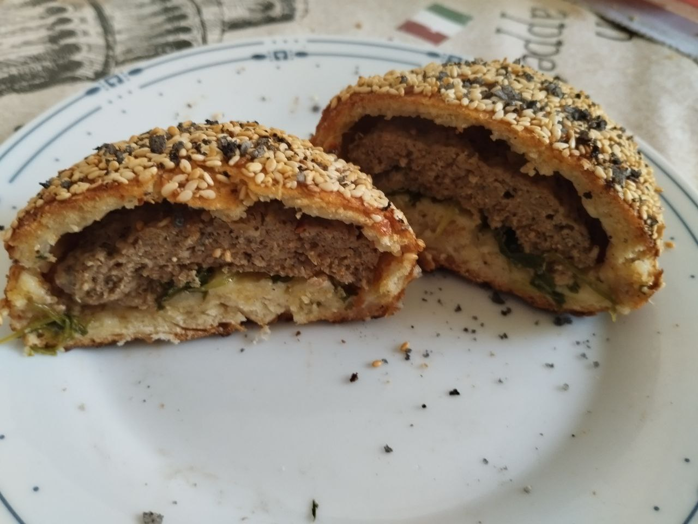
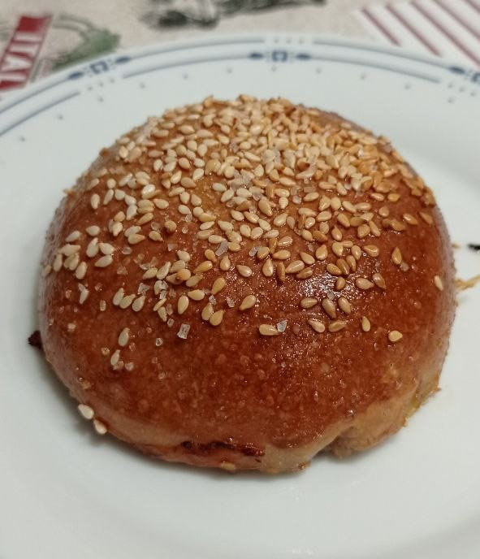

 
| Prep time | Difficulty | Servings |
|---|---|---|
| Min 3.5-4 hours, 45 min active prep + waiting | Medium | 3 (10 buns) |
Suggestions:
One person usually eats about 3 buns for lunch or dinner.
Eat while it is hot 🥴
An ordinary nonstick tray can hold 5 buns (leave room for it to expand a bit.)